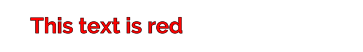
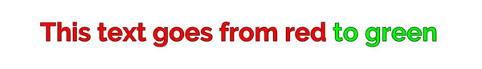
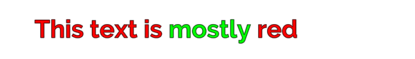

Rich Text 标签通过补充或覆盖 TextMesh Pro GameObject 属性来改变文本外观与布局。例如，无需修改对象属性或材质，就可以调整部分或全部文本的颜色与对齐方式。
使用 Rich Text 标签：
- 在 TextMeshPro Text 输入框中，将支持的标签与显示文本一同输入。参考：supported rich text tags Text input field
禁用某个 TextMesh Pro 对象的富文本：
- 在 Inspector 中打开该对象，禁用 Text Mesh Pro > Extra Settings > Rich Text。
富文本标签（Rich Text Tags）
富文本标签类似 HTML 或 XML，但语法限制较宽松。
简单标签只包含标签名，形式如下：
<tag>
例如，<b> 将文本加粗，<u> 为文本添加下划线。
标签属性与值（Tag attributes and values）
某些标签还有值或属性，形式如下：
<tag="value"> or <tag attribute="value">
例如 <color="red"> 让文本变红，red 是 color 标签的值。
<sprite index=3> 插入默认 Sprite Asset 中的第四个 Sprite。index 是 sprite 标签的属性，其值为 3。
标签连同属性的总长度最多为 128 个字符。
下表列出可用属性／值的类型。
| 属性／值类型 | 示例 |
|---|---|
| 小数（Decimals） | 0.5 |
| 百分比（Percentages） | 25% |
| 像素值（Pixel values） | 5px |
| 字体单位（Font units） | 1.5em |
| 十六进制颜色值（Hex color values） | #FFFFFF (RGB)#FFFFFFFF (RGBA)#FF (A) |
| 名称（Names） | <link="ID"> 和 <link=ID> 都有效。 |
标签作用域与嵌套（Tag scope and nested tags）
标签的 Scope 决定它影响的文本范围。通常，在某位置插入标签后，会影响从该位置到文本末尾的全部内容。
例如，在文本开头添加 <color="red"> 会影响整个文本块：
<color="red">This text is red
连续使用颜色标签的效果。

在文本中间加入同一标签，则只影响从标签位置到文本末尾的内容：
This text turns<color="red"> red
连续使用颜色标签的效果。
同一文本块中多次使用同类标签时，最后一个会覆盖之前同类标签的效果。
<color="red">This text goes from red<color="green"> to green
连续使用颜色标签的效果。

多数标签还可用结束标签限制作用域。结束标签只包含 / 和标签名，例如 </tag>。
标签也可嵌套，让一个作用域位于另一个内部。例如：
<color=red>This text is <color=green>mostly </color>red.
连续使用颜色标签的效果。

第一个 <color> 影响整个文本块；第二个有结束标签，因此只影响一个单词。
嵌套标签时，不必严格按开始顺序关闭各个作用域。
富文本与从右向左文本（Right-to-left text）
TextMesh Pro 的 Right-to-left 编辑器不区分普通文本与富文本标签。在其中输入标签时，标签本身也必须按从右向左顺序输入才会生效。
最简单的做法是先在 Right-to-left 编辑器输入文本，再在普通编辑器中添加标签。